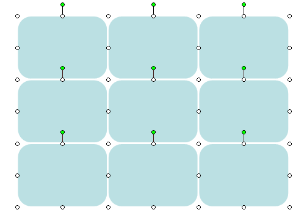
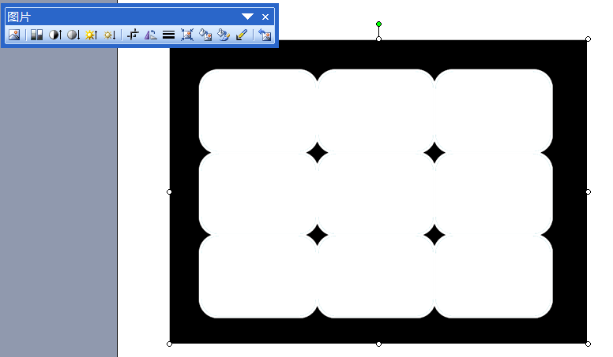
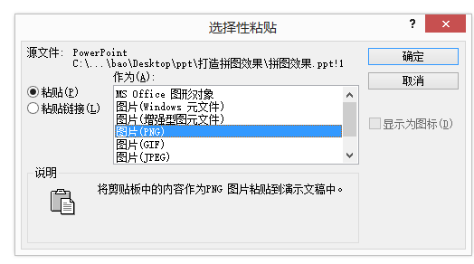
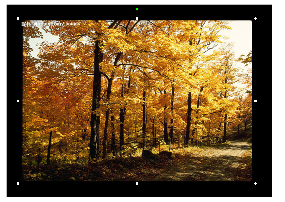
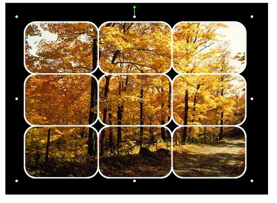

学习任务及过程
1、用word对图片文字进行处理
2、用ppt对图片、文字、声音、flash进行处理
3、用excel对数据进行处理
4、使用qq、微博工具实时在线交流等
在powerpoint中打造拼图效果
首先用绘图工具栏画一个矩形，并调整好其大小，然后复制若干相同的矩形， 做成拼图形状，然后全部选中，选择设置自选图形格式里，设置其线条的颜色为白色， 调整其线条的粗细

把这些图形组合起来成一个图形，然后绘制一个矩形，使其填充颜色为黑色， 选择“置于底层”然后放在组合的圆角矩形下方，然后将组合好的圆角矩形和矩形组合起来
将上述组合起来的图形选择“剪切” 在菜单中选择“编辑”菜单，然后选择“选择性粘贴” 在选择性粘贴里选择粘贴为图片(png)格式的
在图片工具栏中进行透明色设置
然后插入一张图片
选择插入的图片，选择“叠放次序”中下移一层，然后将其组合起来
设置幻灯片背景颜色为黑色